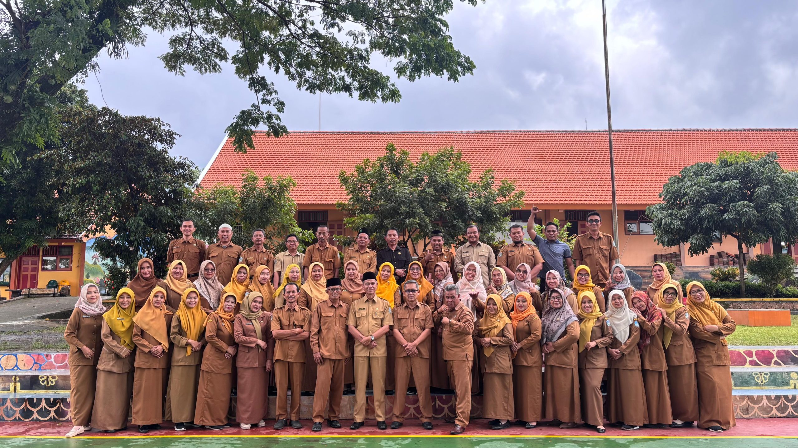
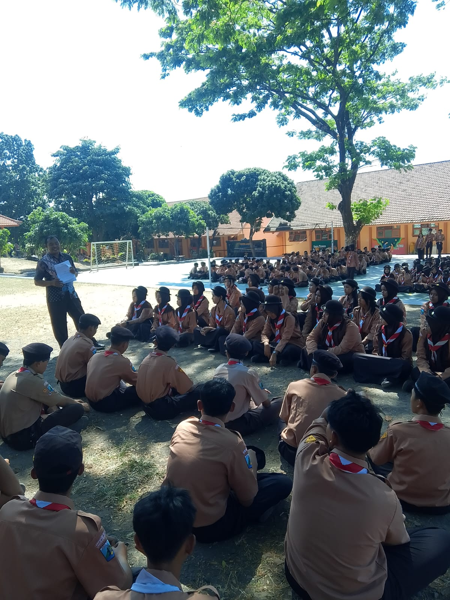

PRESTASI
Ekstrakurikuler SMAN 1 Pacet meraih prestasi dalam kompetisi tingkat kabupaten.
Informasi mengenai pencapaian terbaru anggota ekstrakurikuler.
01 September 2026Platform informasi dan pengelolaan kegiatan ekstrakurikuler SMAN 1 Pacet.

Portal Ekstrakurikuler SMAN 1 Pacet merupakan platform yang digunakan untuk mengelola dan menyampaikan informasi mengenai kegiatan ekstrakurikuler di sekolah.
Siswa dapat melihat kegiatan, tugas, pengumuman, serta riwayat kehadiran. Pembina dan pelatih dapat mengelola kegiatan serta melakukan absensi.
Dapatkan informasi terbaru mengenai ekstrakurikuler.
Pantau kegiatan dan tugas ekstrakurikuler.
Kelola dan pantau kehadiran anggota.
Kembangkan minat, bakat, dan pengalamanmu bersama berbagai ekstrakurikuler di sekolah.

Mengembangkan kemampuan bermain bola basket, strategi permainan, kerja sama tim, dan sportivitas.
Lihat Detail →

Informasi mengenai pencapaian terbaru anggota ekstrakurikuler.
01 September 2026